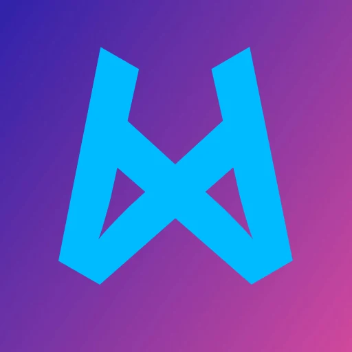

Audio input
Choose a microphone, a Windows playback device, or audio files and folders in a playlist. One source is used for each transmission.

MultiV
Project banner
Virtual radio client
MultiV is a desktop client for virtual radio simulators. Choose an audio source, configure a transmission, and manage station details from one application.
Features
MultiV keeps the settings used to prepare and manage a virtual radio transmission in one desktop application.
Choose a microphone, a Windows playback device, or audio files and folders in a playlist. One source is used for each transmission.
Set the station name, frequency, signal mode, and power. Advanced settings include microphone gain, tone controls, compression, and bandwidth filters.
Edit station details and set a logo using a public image URL or an uploaded image.
Browse station listings and open station profiles and comments.
Signal modes
MultiV includes narrowband FM, digital voice, digital radio, and Morse-code transmission options.
DRM is experimental. RADE supports transmission only. The NFM and DRM signal paths have not been independently verified with a receiver. The README documents mode-specific requirements and limitations.
Simulator providers
MultiV is intended to support multiple virtual radio simulators. The roadmap lists provider support and integration status.
Installation
Install the project dependencies from the repository root, then start the desktop application.
python -m pip install -r requirements.txt
python main.py